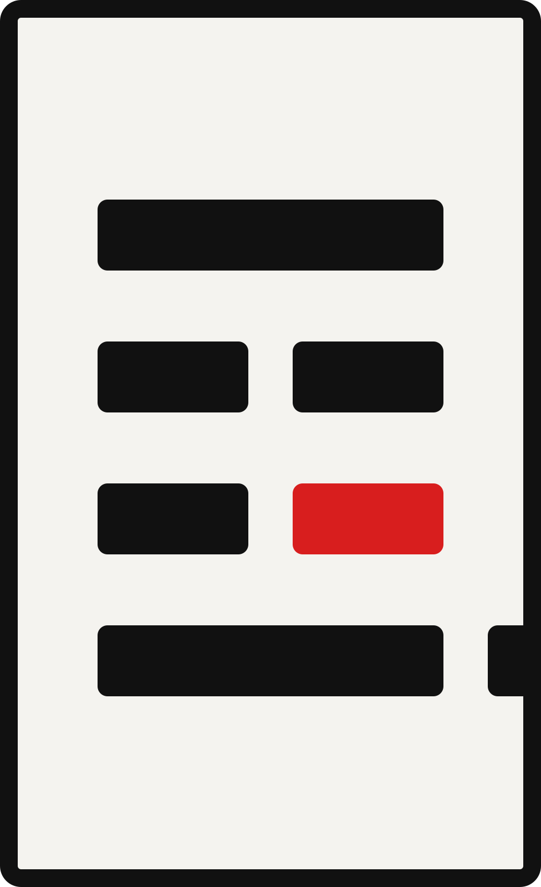
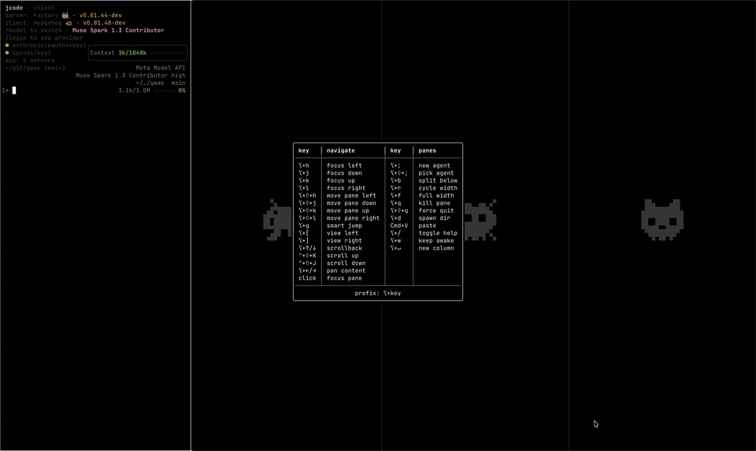
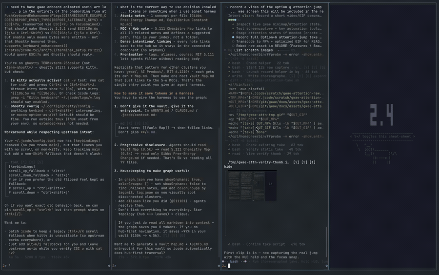

gwae
Scrolling tiling for the terminal.
Panes never shrink.
curl -fsSL https://hongnoul.github.io/gwae/install.sh | bash

Not sped up - you can go much faster than demo
Install
curl -fsSL https://hongnoul.github.io/gwae/install.sh | bashInstalls to ~/.local/bin. Override with GWAE_INSTALL_DIR.
Other methods
brew install hongnoul/tap/gwae
cargo install gwaeirm https://hongnoul.github.io/gwae/install.ps1 | iex # WindowsRun
gwae # start
gwae init # theme and layout setup
gwae run "claude" # open agent in first column
gwae doctor # check configNew columns open to the right of focus. ⌥+; spawns an agent and focuses it.
How it works
- Fixed width columns (
1/4default,⌥+rto cycle). Rows scroll past the edge, they do not squeeze. - Scroll snaps to column boundaries. No slivers.
- One process. No daemon, no socket. Agent persistence is
claude --resumeorjcode --resume. - Any terminal on macOS and Linux. Windows via ConPTY, experimental.
- Kitty graphics forwarded and clipped to pane.
Agent status
Standard OSC 133. No agent changes needed.
» working ! needs input ✓ done ✗ failedHold ⌥ for dashboard. ⌥+g jumps to the pane that needs you.

Keys
⌥ is Option on macOS, Alt elsewhere. Other keys go to the focused pane.
⌥+Enter new column to right of focus
⌥+Shift+Enter new strip below
⌥+; spawn agent
⌥+h/j/k/l focus left/down/up/right
⌥+Shift+h/j/k/l move pane
⌥+g jump to pane that needs attention
⌥+t theme picker
⌥+/ help
⌥+q kill pane
click focus pane
drag select and copyFull list: docs/KEYBINDS.md
Config
~/.config/gwae/gwae.toml. All keys optional.
default_column_width = "quarter"
theme = "catppuccin-mocha"
default_agent = "claude"
startup_panes = 1Docs
Why · Architecture · Layout spec · Comparison